2016年11月17日至18日，中国科学院谭铁牛副院长、国际合作局于润生副局长、蒋一琪副处长一行视察加德满都科教中心。谭铁牛一行在中心主任、中科院青藏高原研究所所长姚檀栋和特里布文大学校长卡尼亚（Tirth Raj Khaniya）等的陪同下，视察了加德满都科教中心基建工程。赵平副所长对园区大门和道路改造工程、观测场建设工程、综合办公实验楼建设工程和专家公寓装修方案进行了汇报。谭铁牛对中心的基建工作予以高度评价，并提出中心的建设工程既要考虑当前的科教需要，还要兼顾今后的发展需求，在园区规划和景观设计中，应适当增加一些中国元素。目前，中心新建的综合办公实验楼已结构封顶，预计明年中投入使用。第一批实验观测仪器已经运抵加德满都科教中心，其余设备将陆续到位。
现场考察结束后，中尼双方人员在第三极环境加德满都中心办公室举行会谈。姚檀栋介绍了加德满都科教中心在人才培养、联合野外科考、合作研究等方面取得的成绩，展望了中心的发展规划。作为对青年人才培养的一项重要举措，姚檀栋为“特里布文大学青年教师R语言统计培训班”授课老师赖江山博士颁发聘书，并宣布为期10天的培训活动正式启动。马耀明副所长代表中科院生态环境研究中心向特里布文大学捐赠了水处理设备。加德满都科教中心副主任Binod Dawadi博士介绍了中心第二届优秀硕士生奖学金评选程序和学生入选情况，谭铁牛和卡尼亚共同为获奖学生颁发了证书。加德满都科教中心执行主任梁尔源汇报了2016年中国科学院-特里布文大学联合野外科考的情况。
在听取汇报后，谭铁牛祝贺双方取得的一系列合作成果，对尼方为中科院科研人员在尼泊尔开展工作时给予的支持表示感谢。他表示，第三极环境变化对中尼两国，乃至南亚、东亚、东南亚、中亚等广大地区都有直接的气候、环境和经济影响，是一个区域性挑战，具有极为重要的科学和民生意义。加德满都科教中心是中科院在建的9个海外科教基地之一，自筹建以来，中科院院长白春礼先后两次到访该中心，足以说明中科院对该中心工作的重视。在中心主任姚檀栋的带领下，双方在科研合作、人才培养、服务民生等方面取得了可喜的合作成果，未来的合作前景也令人振奋。中尼两国友谊历史悠久，1955年建交，目前中尼合作进入了第二个“黄金60年”，开启了双方合作的新篇章。第三极环境计划正在发挥重要的的国际影响力，加德满都科教中心不仅要建成区域合作的平台，更要建成国际化的科研中心。
谭铁牛表示，中科院于11月7日至8日在京举办了“一带一路科技创新国际研讨会”，此次会议由中科院联合特里布文大学等12个国立科研机构和大学共同主办，来自全球近40个国家和地区的350余名科学家参加会议。他对卡尼亚率领尼泊尔代表团出席会议再次表示感谢。他坚信，中尼双边合作定将为一带一路倡议的实施、为两国的科技事业和经济发展提供有力支持。中科院已加大了对第三极环境计划的支持，并将其提升为泛第三极环境计划。他希望中尼双方继续加强合作，将这一中心建成第三极环境研究领域的国际著名机构。
卡尼亚对中科院代表团的来访表示欢迎，对中科院邀请特里布文大学作为“一带一路科技创新国际研讨会”共同主办方表示衷心感谢。作为会议联合声明发起单位之一，特里布文大学深感荣幸，尼方将积极参与合作机制的建设。卡尼亚表示，他本人并不从事自然科学研究，代表团在北京访问了青藏高原研究所，真切地了解了中科院和青藏高原研究所雄厚的科研实力。通过今天的介绍和会谈，进一步体会到中尼双方在科教领域开展合作的重要性。加德满都科教中心作为双方合作的平台，发展潜力巨大，特里布文大学将对中心的建设继续提供支持，也感谢中科院对尼方在能力建设方面提供的帮助。
中国驻尼泊尔大使馆文化处张冰主任应邀参加会谈。他认为谭铁牛一行此次来访的意义深远，加强了中尼双方高层次的科研合作交流，对加德满都科教中心未来的发展提出了更高的期望，中心积极响应国家“一带一路”战略倡议，必将进一步增加中国在南亚国家尤其是尼泊尔的科技影响力。张冰同时预祝中国科学院加德满都科教中心在今后的工作中取得更大的成绩。
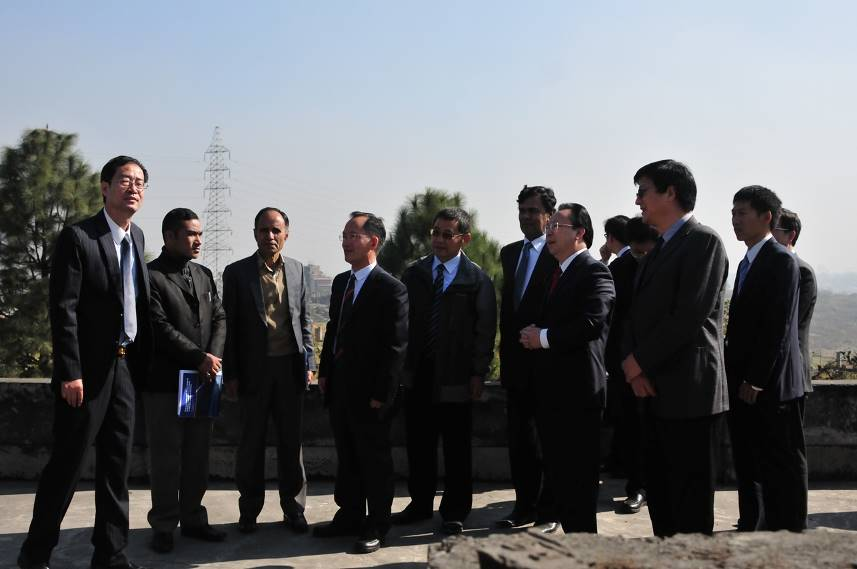
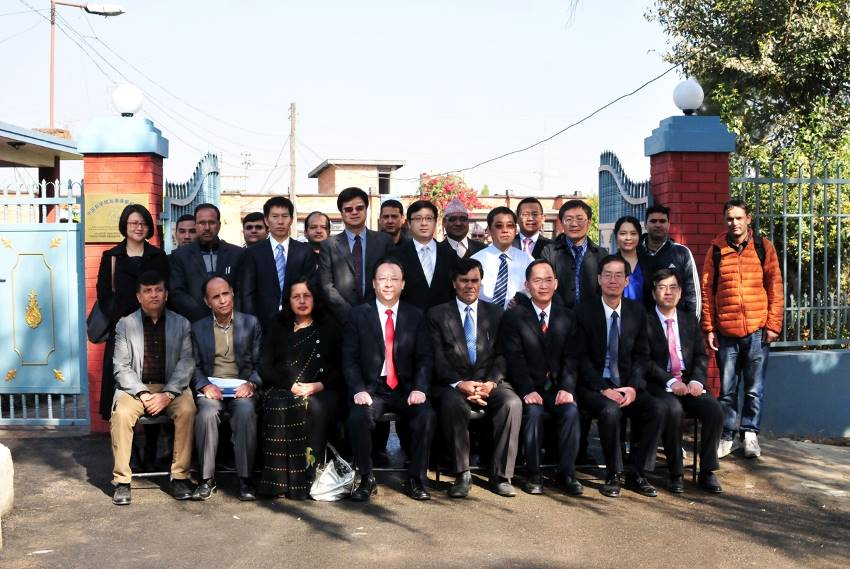
谭铁牛一行考察了加德满都科教中心专家公寓装修工程和综合办公实验楼建设工程的施工现场
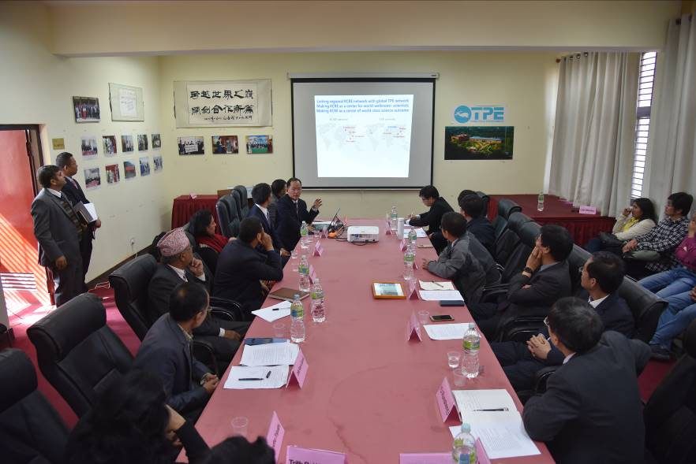
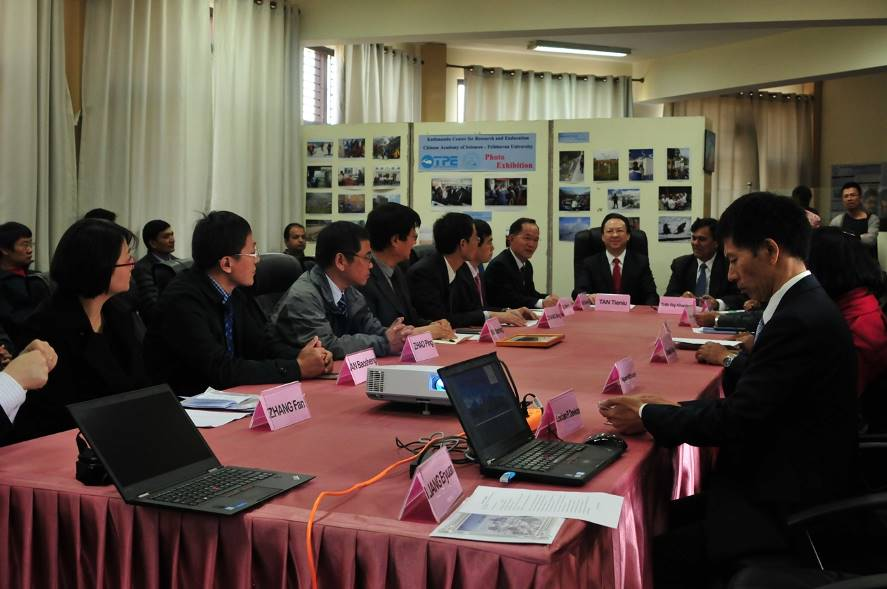
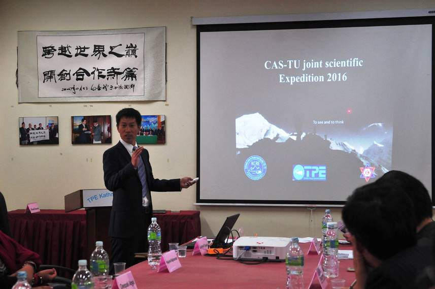
中心主任姚檀栋介绍加德满都科教中心最新进展，梁尔源汇报2016年中国科学院-特里布文大学联合野外科考初步成果
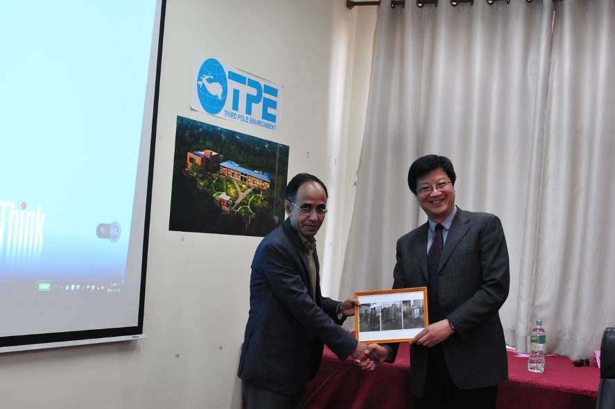
青藏高原所马耀明副所长代表中科院生态环境研究中心向特里布文大学捐赠水处理设备
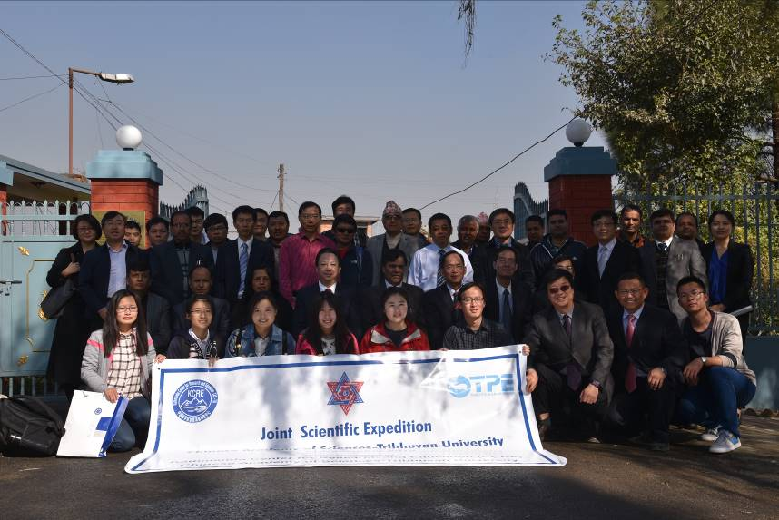
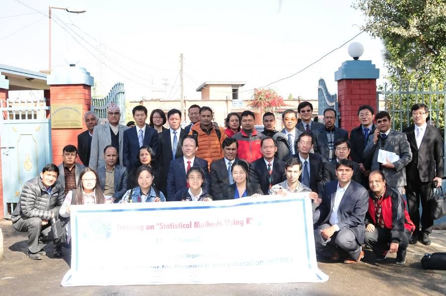
谭铁牛副院长一行接见野外科考和参加R语言统计培训班队员和学员
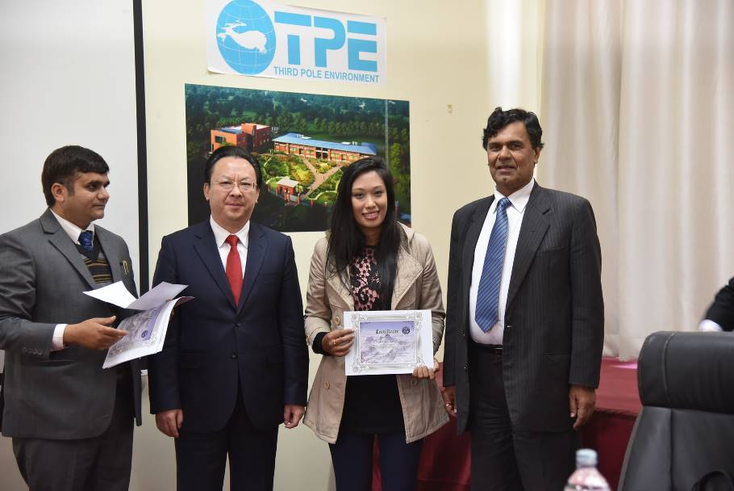
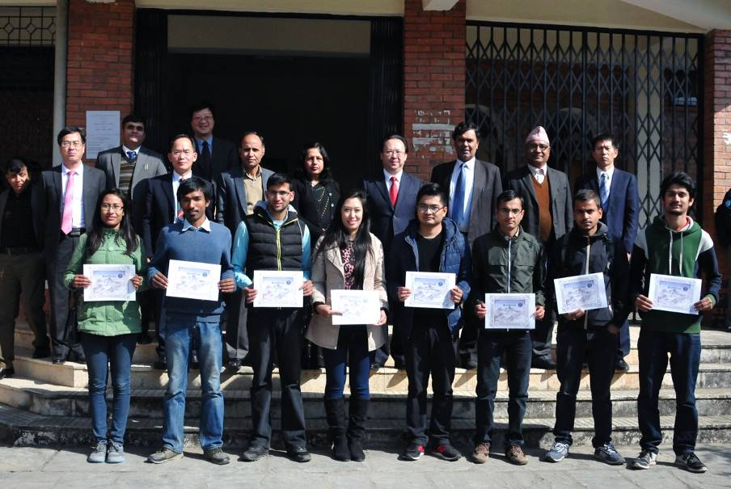
谭铁牛副院长和卡尼亚校长共同为中科院加德满都科教中心优秀硕士奖学金的学生获得者颁发证书
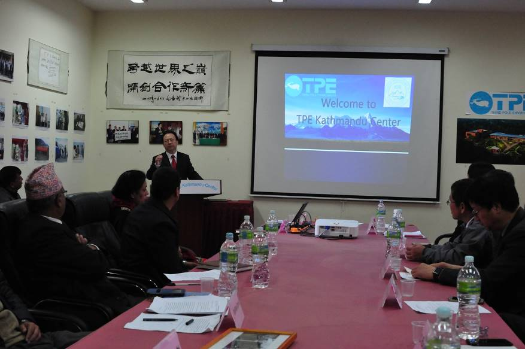
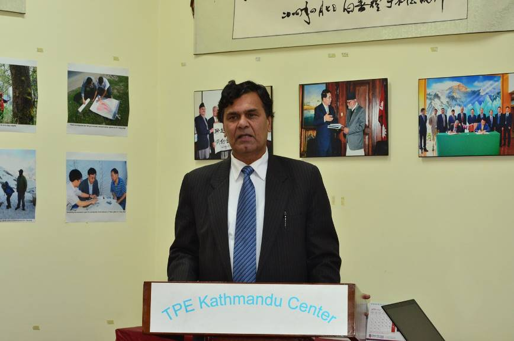
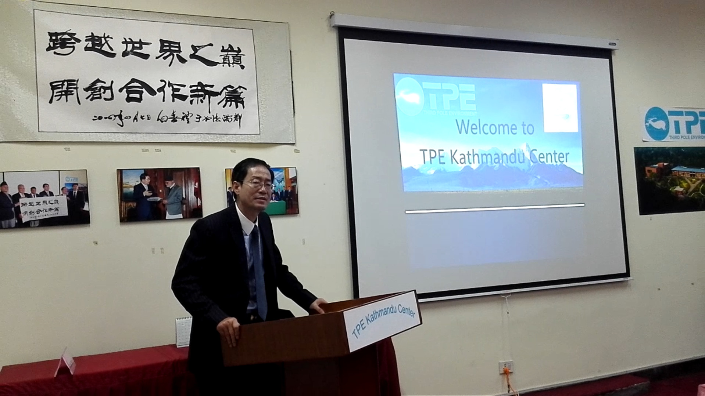
谭铁牛副院长、卡尼亚校长和中国驻尼泊尔大使馆文化处张冰主任总结发言